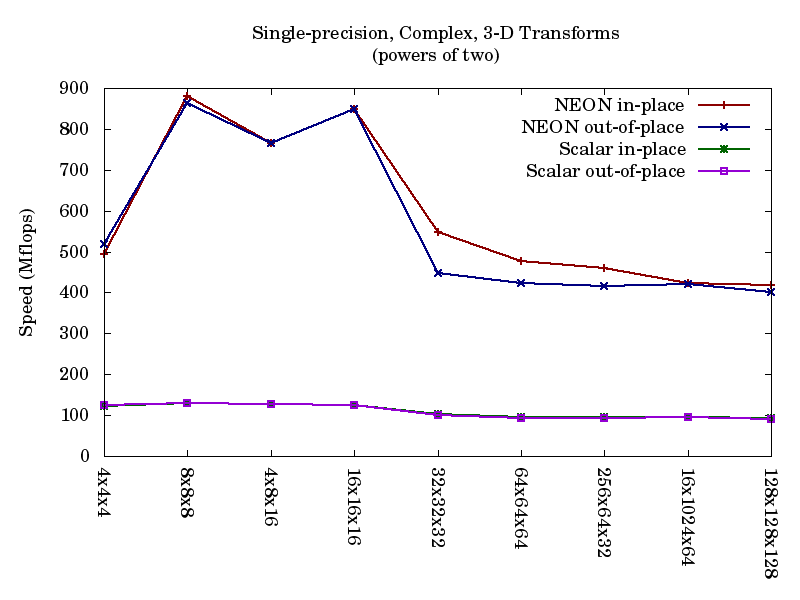
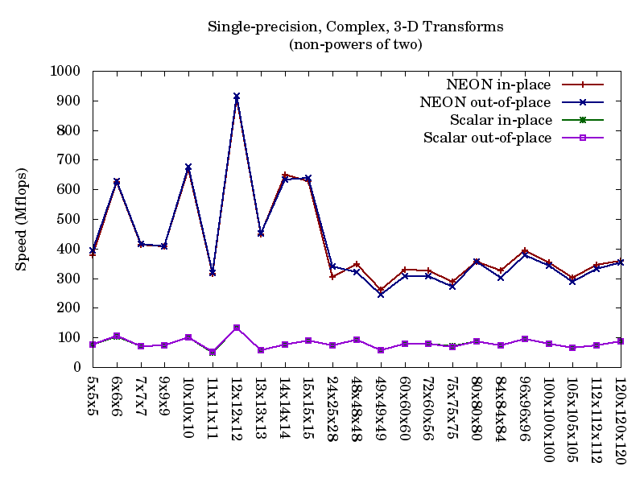
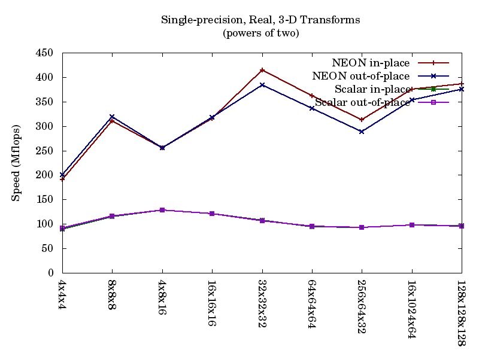
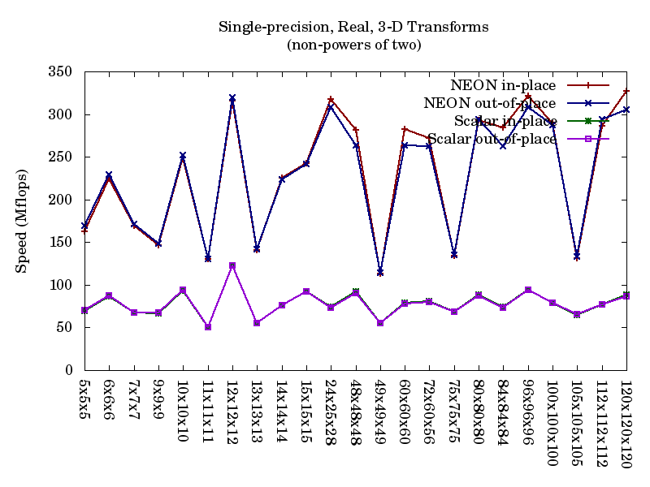
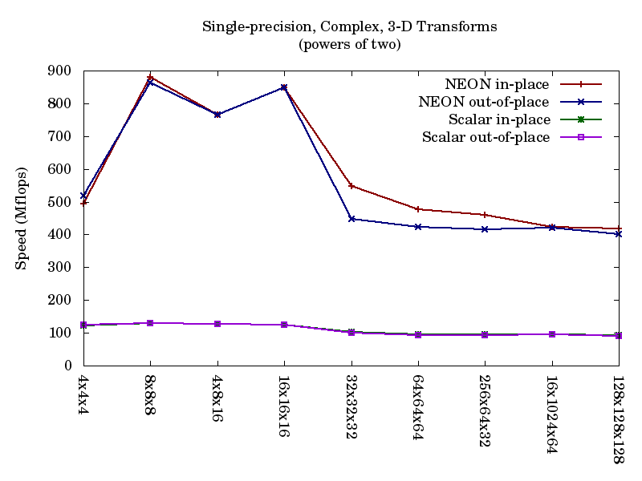
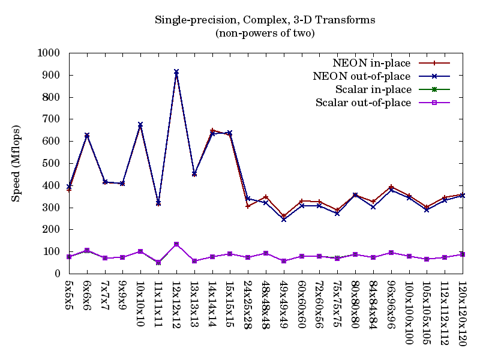
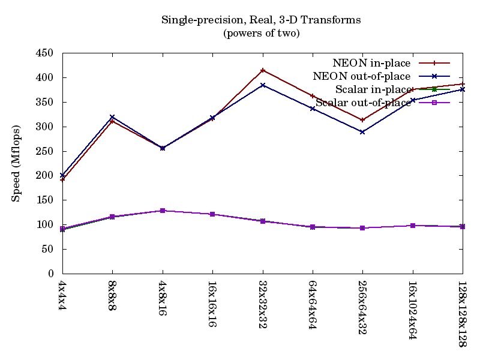
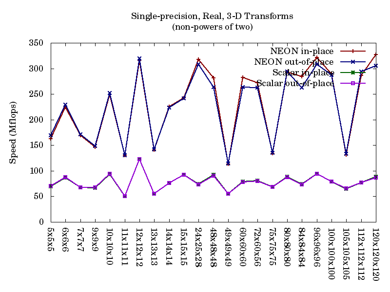
System: 1 GHz ARM Cortex A8 (Beagleboard XM)
Compiler: gcc 4.4.5 (native)
Configure settings: --enable-single --enable-neon --enable-perf-events --enable-fma ARM_CPU_TYPE=cortex-a8
Comments: Still very good, but enabling FMA seems to cause a 5-10% performance drop. We are very interested in learning whether this is true across the full range of NEON implementations, or is simply an idiosyncracy of the Cortex A8 and A9's very similar NEON units.
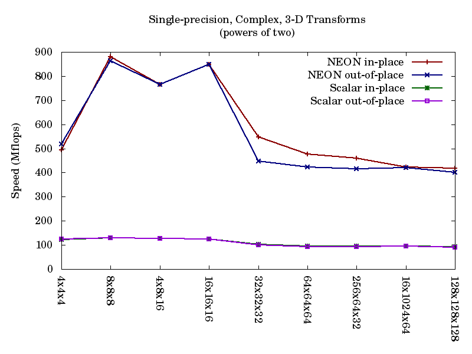
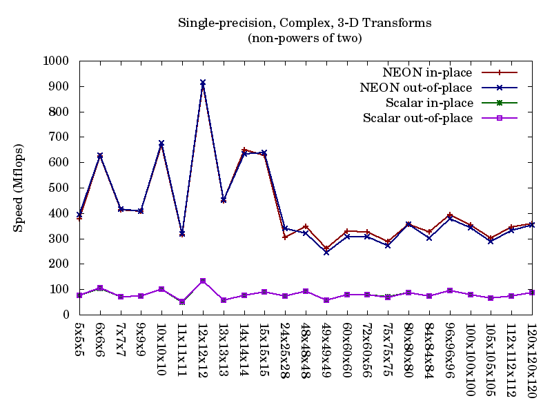
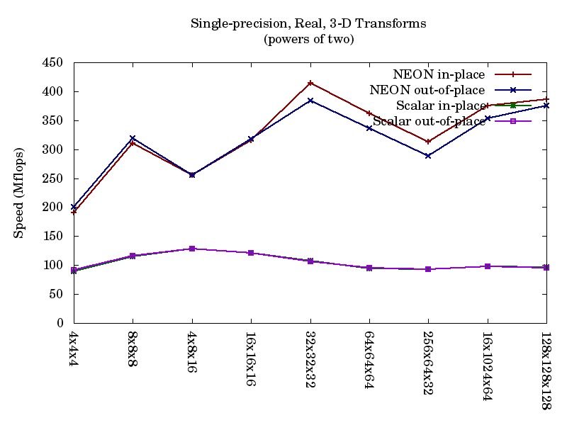
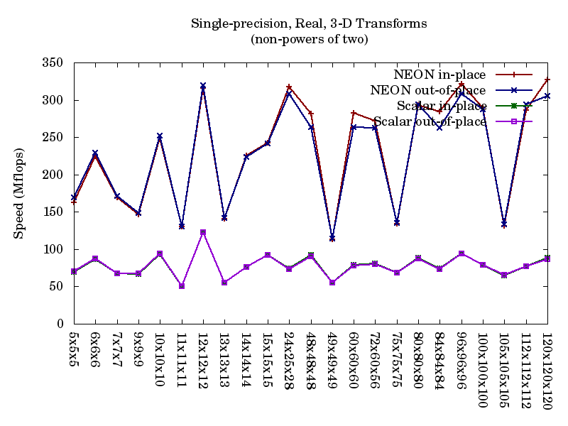
Detailed NEON timing data for these cases
Copyright © 2010-11 Vesperix Corporation